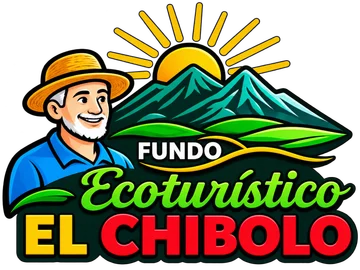
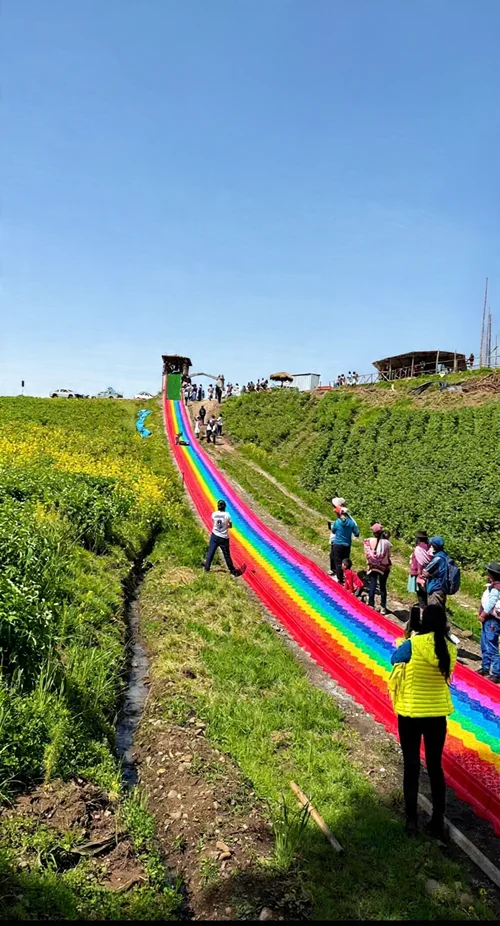
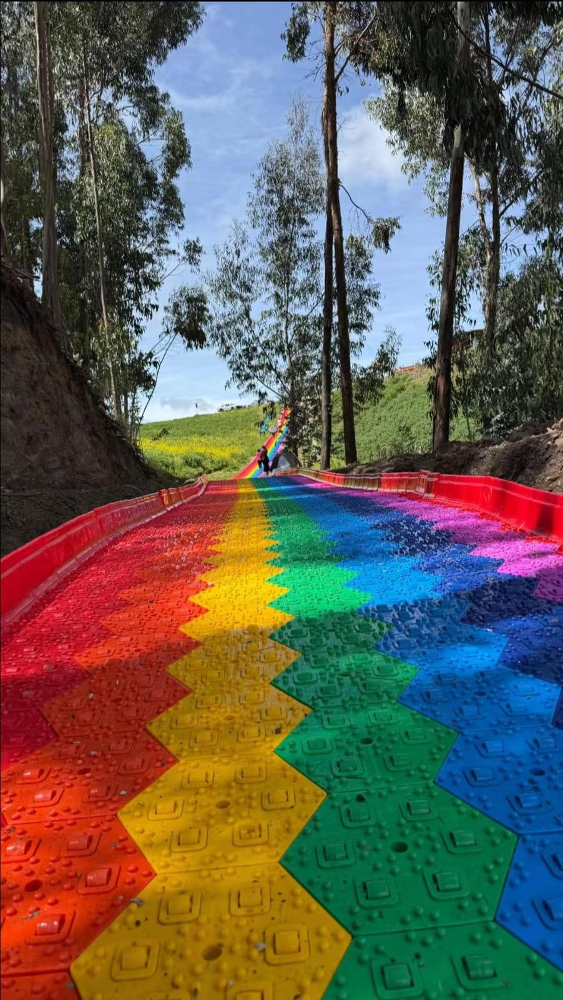

Un día más
cerca de la naturaleza.
Búngalos para quienes quieren prolongar su visita. Consulta las opciones y disponibilidad antes de venir.
S/ 20 por cama

AYACUCHO, PERÚNATURALEZA & AVENTURAPlanea tu visitaEl verde se vive. La aventura se comparte.
Descubre un rincón de Ayacucho para volver a jugar, respirar y disfrutar en familia.

180 metrosUn poco de adrenalina. Un momento de calma.
O todo eso, en buena compañía.
Tarifas referenciales. Confirma disponibilidad y condiciones al planear tu visita.

EL CHIBOLO · SAN JOSÉ DE TICLLASEl Chibolo es una invitación a mirar Ayacucho de otra manera: desde el campo, entre árboles y con tiempo para compartir.
Nos gusta la alegría sencilla de una salida en familia, una aventura con amigos y una conversación que se alarga sin mirar el reloj.
Búngalos para quienes quieren prolongar su visita. Consulta las opciones y disponibilidad antes de venir.
Haz una pausa en nuestro restaurante. Consulta los platos disponibles para el día de tu visita.
En tu cumpleaños, los juegos van por nuestra cuenta. Escríbenos para conocer las condiciones de la promoción.
Estamos en San José de Ticllas, Ayacucho.
Tu escapada empieza en la vía Los Libertadores.
Toma el desvío a la derecha indicado por el cartel.
Continúa aproximadamente 50 minutos desde el desvío, en dirección a San Pedro de Cachi.
Ahí te espera el Fundo Ecoturístico El Chibolo.
Cuéntanos cuándo te gustaría venir. Preparamos tu consulta para que la envíes por WhatsApp.
942 468 851 ↗CONSULTAS Y RESERVASTambién al 929 517 122 ↗La página original indica S/ 0 para piscina, catarata, cañones y columpio panorámico. Confirma con el fundo el ingreso general y las condiciones vigentes.
Para disfrutar del campo, sugerimos ropa cómoda, protección solar, agua y calzado apropiado. Si usarás la piscina, lleva ropa de baño y una toalla.
El fundo cuenta con búngalos. Consulta disponibilidad, condiciones de alojamiento y tarifa antes de tu visita.